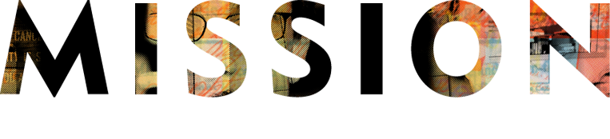

After 15 years, it’s our time.
Our time to rise above. Our time to renew, remake and reenergize. So let’s take a moment to remind ourselves that we bring the most needed support at the most heightened moment to those affected by cancer—from day one. Above all else, THEY are our priority. We fight with them to rise above the odds, the expectations and the disease. We all rise above. Together.
As one of our cancer warriors stated, “I feel like I’m the number one priority to the Foundation. I’m above all other things to them. There are so many layers to this journey, and they help me rise to the top… Where I can breathe.”

Sarah and her husband were ready. Ready to start a family, ready to get back to normal life beyond cancer. Then, the second diagnosis came in. Breast cancer. Again. The news was devastating and the options were few.
At 31, Sarah chose to have her ovaries removed, her best chance to survive. She thought it meant her dream of being a parent was over. She was fighting for her own life now. But when her oncologist mentioned the possibility of in vitro fertilization and connected Sarah to the LIVESTRONG Foundation, everything changed.
Sarah and her husband worked with one of our navigators to help pay for the medications and services for freezing embryos. And when her sister-in-law stepped forward to be a surrogate, their dreams came true. Lilly Dee was born nine months later.
Sarah sums it up, "The LIVESTRONG Foundation made what we thought was impossible... possible."


We saw an 11% increase in new client intake over 2011

We supported more than 15,000 people affected by cancer in person, on the phone or online

We saved clients nearly $6,000,000 in health care expenses


In 2012, we added more than 830,000 new grassroots supporters to the movement; advocates who assist in heightening awareness and engage in public policy matters impacting the cancer community.
Activism like that not only inspires more advocates, but it fuels donations. We are often humbled by the impressive number of individual donors who give and the support we receive from a community unity around our mission.
In 2012, we raised $48 million to support programs that serve people affected by cancer through more than $23.4 million in contributions from more than 116,000 donors worldwide.
This tremendous generosity allows us to provide resources like the LIVESTRONG Guidebook,LIVESTRONG SurvivorCare and LIVESTRONG at School, among many other programs and services. Since our inception, we have raised over $500 million dollars for the fight against cancer, and 82% of those funds have gone directly to support our programs and services for survivors.

In 2012, 84 cents of every dollar raised went directly to programmatic funding.


CIP offers funding to organizations to replicate programs that have demonstrated success in supporting people affected by cancer within one city, state or region of the United States. Recreating programs that are proven to be effective has allowed us to eliminate the cost of developing new programs and allows for more immediate implementation to help cancer survivors and their families today—directly supporting our mission.